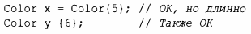

⇐2.4. Объединения 2.6. Советы⇒
2.5. Перечисления
В дополнение к классам С++ поддерживает простую разновидность пользовательских типов, для которой мы можем перечислить значения:
Обратите внимание, что перечислители (например, red) находятся в области видимости своего enum class, так что они могут повторно использоваться в разных enum class без какой-либо путаницы. Например, Color::red является перечислителем red в перечислении Color, который отличается от Traffic light::red.
Перечисления используются для представления небольших множеств целочисленных значений. Они применяются с целью сделать код более удобочитаемым и менее подверженным ошибкам, чем в ситуации, когда такие символические (и мнемонические) имена не использовались бы.
class после enum указывает, что перечисление строго типизировано и что его перечислители имеют ограниченную область видимости. Будучи отдельными типами, перечисления enum class помогают предотвратить случайное злоупотребление константами. В частности, мы не можем смешивать значения Traffic light и Color:

Точно так же мы не можем неявно смешивать Color и целочисленные значения:
Перехват попытки преобразования в enum является хорошей защитой от ошибок, но часто мы хотим инициализировать enum значением его базового типа (которым по умолчанию является int), так что это допускается как явное преобразование из базового типа:
По умолчанию в enum class определены только присваивание, инициализация и сравнения (например, == и <; § 1.4). Однако перечисление является пользовательским типом, так что мы можем определить для него операторы:
Если вы не хотите явно квалифицировать имена перечислителей и хотите, чтобы их значения были целыми числами (без необходимости явного преобразования), можете удалить слово class из enum class и получить "обычный" enum. Перечислители такого "обычного" enum находятся в той же области видимости, что и имя их перечисления, и неявно преобразуются в свои целые значения. Например:
Здесь col получает значение 1. По умолчанию целочисленные значения счетчиков начинаются с О и увеличиваются на единицу для каждого очередного перечислителя. "Обычное" перечисление было в С++ (и С) с самых первых дней, так что несмотря на то, что они менее хорошо себя ведут, они широко распространены в современном коде.